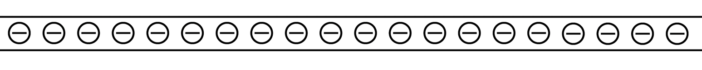
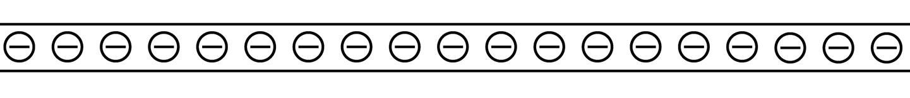
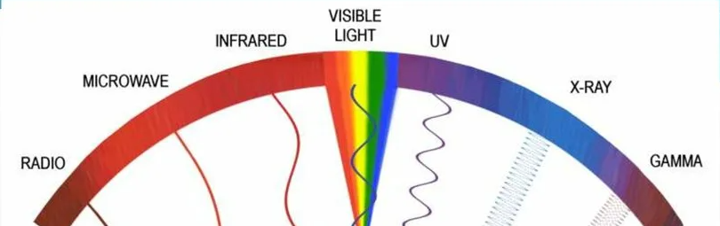
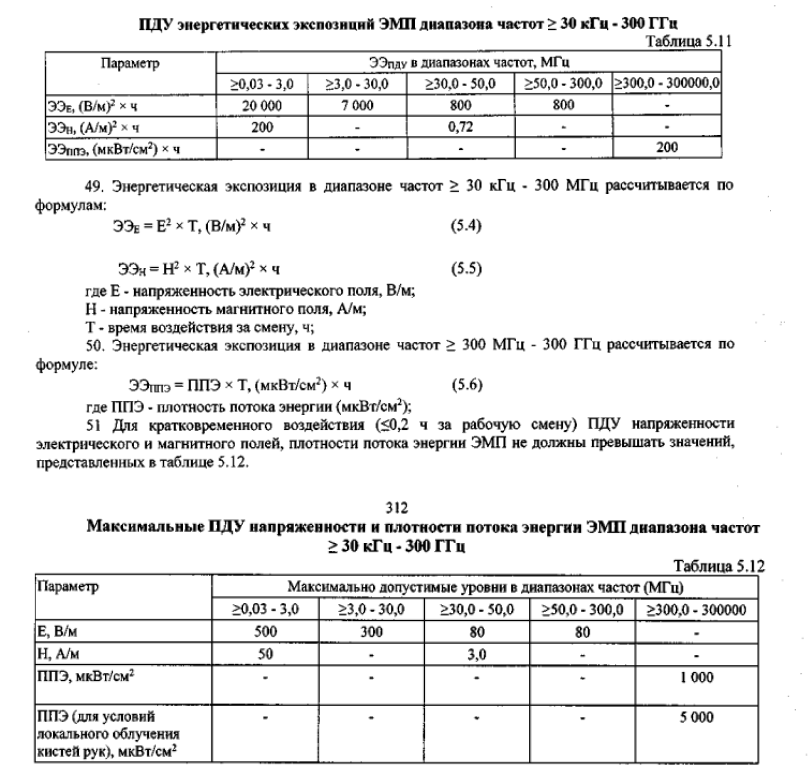

Поле - это невидимая материя, которая позволяет объектам взаимодействовать на расстоянии. Чаще всего описывается при помощи математических полей
Представим себе магнит. Он притягивает железо. Но как он это делает, если он даже не прикасается к нему? Правильнее сказать, что магнит создает вокруг себя материю, которая называется магнитным полем, и именно это поле тянет железо к магниту

Чем дальше мы от магнита, тем слабее притягивается железо. Это означает, что в каждой точке пространства поле отличается, то есть оно неоднородно
Чтобы понять, как на вещество будет влиять поле, желательно это поле как-то представить. Так, например, магнитное поле можно представить при помощи линий магнитной индукции. Чем гуще линии - тем сильнее магнитное поле в этой области пространства. Иными словами: чем больше силовых линий - тем сильнее притягивается железо

Электромагнитное поле - это поле, которое создается движущимися зарядами. Состоит из двух взаимосвязанных полей: электрического и магнитного
Вспомним, что магнитное поле возникает при движении заряженной частицы или при изменении электрического поля. Самый очевидный способ создать магнитное поле - это "передвинуть" заряд.
Постоянный электрический ток - это направленное движение электрических зарядов. Соответственно электрический ток создает магнитное поле. Это доказал еще Ампер в ХХХХ году. Два этих поля являются проявлениями одного постоянного электромагнитного поля. Постоянным оно называется из-за того, что в среднем ни электрическое, ни магнитное поле, не изменяются со временем.
Электромагнитное излучение - это одновременное колебание электромагнитного поля
Если использовать не постоянный, а переменный ток, то есть тот, который течет то в одном, то в другом направлении, то магнитное и электрическое поля также будут постоянно изменяться. Собствено, электромагнитное поле колеблется, появляется излучение или электромагнитные волны (эти слова являются синонимами)
Поговорим о характеристиках волн. Многие слышали, что свет - это тоже электромагнитное излучнение, воспринимаемое глазом. Более того, многие видели подобные картинки. Они изображают, что радиоволны, инфракрасное излучение, видимый свет, ультрафиолет, рентгеновское излучение и гамма-волны - это все колебание ЭМИ. Согласитесь, должно быть что-то, что отличает свет от радиоволн, а уж тем более от рентгеновского излучения
Основные характеристика ЭМИ - это длина волны, период, частота колебаний
Для начала заметим, что линии магнитного поля изменяются в переменном токе то появляются, то исчезают, меняя при этом направление Но эти изменения просходят циклически. То есть через некоторое время линии магнитного поля возвращаются в "исходное состояние". Когда этот момент произойдет, то говорят, что произошло одно колебание магнитного поля. Точно такие же процессы происходят и в электрическом поле
Период - время, за которое совершится одно колебание поля. Изменяется в секундах
Частота - это количество колебаний, которое сделает волна за одну секунду. Измеряется в Герцах. Частота равна периоду в -1 степени
Длина волны - это расстояние, которое пройдет волна за время, равное периоду. Изменяется в метрах
На картинке, приведенной выше, у излучения частота увеличивается, именно в этом заключается все различие волн. На самом деле все три величены неразрывно связаны между собой. Изменяя одну из них, другие тоже изменятся.
Электромагнитное излучение (ЭМИ) может влиять на работу организма. Предсказать результат однозначно невозможно, наш организм слишком сложный. Для оценки влияния ЭМИ собирают экспериментальные данные. Создают ЭМИ с известными характеристиками и подставляют под него много зверушек, кусков мяса и других подобных объектов, после смотрят, что в них изменилось. В конечном итоге мы такие (на самом деле гораздо более сложные) таблицы
Основываясь на подобных таблицах были получены приблизительные значения характеристик ЭМИ, при которых человек остается здоровым. Эти ограничения прописаны в специальном документе - СанПиН (Санитарные правила и нормы). Чтобы не допустить превышения этих значений, можно купить детектор электромагнитного излучения. Но гораздо проще соблюдать простейшие правила: не обниматься с телефоном и компьютером весь день, не засыпать на Wi-Fi роутере, не прилипать лицом к телевизору, держать дистанцию с микроволновой печью. Желательно читать инструкции.
Отрывок из СанПин
